Bitscoper Gallery of Historic Technologies
By Abdullah As-SadeedZ3 Computer
It is the
1st programmable, automatic digital computer. It was
a German electro-mechanical universal
Turing-complete computer which was designed by scientist
Konrad Zuse and was completed in Berlin, Germany in
1941.
It weighted 2200 pounds and consumed 4 kW power. It contained 2600 relays (1400 for memory). Its clock speed was 5.3 Hz. It was destroyed on 21 December, 1943 duing the World War II.
It weighted 2200 pounds and consumed 4 kW power. It contained 2600 relays (1400 for memory). Its clock speed was 5.3 Hz. It was destroyed on 21 December, 1943 duing the World War II.
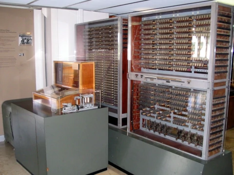
Reconstructed by the designer's Zuse KG company
in 1961
in 1961
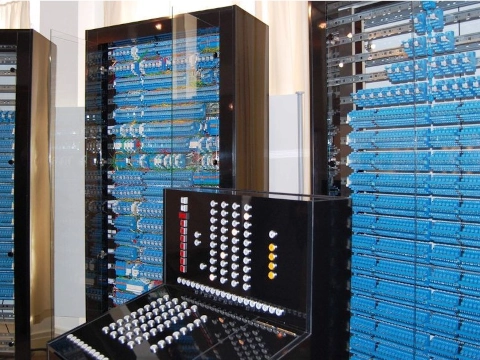
Reconstructed by a son of the inventor,
scientist Horst Zuse in 2010
scientist Horst Zuse in 2010
Atanasoff-Berry Computer (ABC)
It is the 1st automatic electronic digital computer.
It was built by Professor John Vincent Atanasoff and
graduate student Clifford Berry of
Lowa State University of Science and Technology, Ames, Lowa, USA
(then Lowa State College of Agriculture and Mechanic Arts) and
was released in 1942. This computer was
neither programmable, nor Turing-complete and was designed only
to solve the systems of linear equations.
It weighted 320 kG. Its used IBM 80-column punched cards as input devices and 300 vacuum tubes as CPU (Central Processing Unit). Its clock speed was 60 Hz. Its regenerative capacitive memory was of 3000 bits which was made of a pair of 1600 capacitors-containing drums. It also contained 208 dual triode vacuum tubes, 31 thyratrons and approximately 1.6 km of wires.
It weighted 320 kG. Its used IBM 80-column punched cards as input devices and 300 vacuum tubes as CPU (Central Processing Unit). Its clock speed was 60 Hz. Its regenerative capacitive memory was of 3000 bits which was made of a pair of 1600 capacitors-containing drums. It also contained 208 dual triode vacuum tubes, 31 thyratrons and approximately 1.6 km of wires.
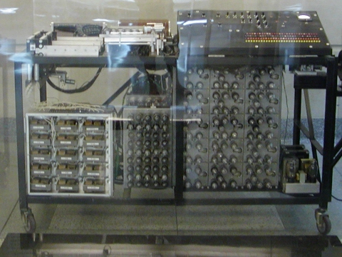
Reconstructed by scientist John Gustafson
and his team in 1997
and his team in 1997
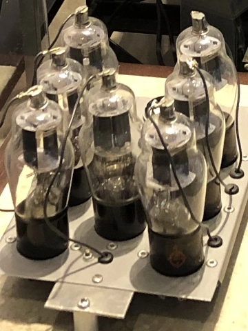
A reconstructed Addition-Subtraction Module
Electronic Numerical Integrator And Calculator (ENIAC)
It is the
1st general purpose automatic electronic digital
computer. It was designed by scientist John William Mauchly and
John Adam Presper "Pres" Eckert Jr. It started operations on 10
December, 1945. It was used to calculate firing tables for
United States Army's Ballistic Research Laboratory (BRL), USA.
Its 1st programme was to calculate feasibility of
thermonuclear weapons. It was formally dedicated at
University of Pennsylvania, USA on 15 February, 1946.
Its area was 167 m2 and weighted 27 tons and and consumed 150 kW power. It contained 20000 vacuum tubes, 70000 resistors, 7200 crystal diodes, 1500 relays, 10000 capacitors and approximately 5000000 hand-soldered joints. It was finally shut down in 1956.
Its area was 167 m2 and weighted 27 tons and and consumed 150 kW power. It contained 20000 vacuum tubes, 70000 resistors, 7200 crystal diodes, 1500 relays, 10000 capacitors and approximately 5000000 hand-soldered joints. It was finally shut down in 1956.
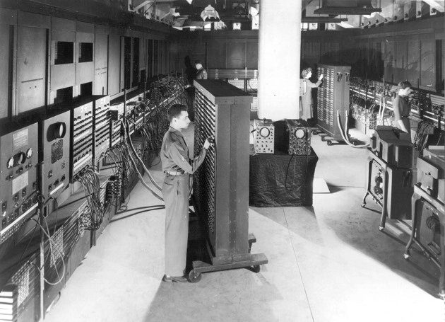
Cpl. Irwin Goldstein is setting functional table switches
at Moore School of Electrical Engineering
at Moore School of Electrical Engineering
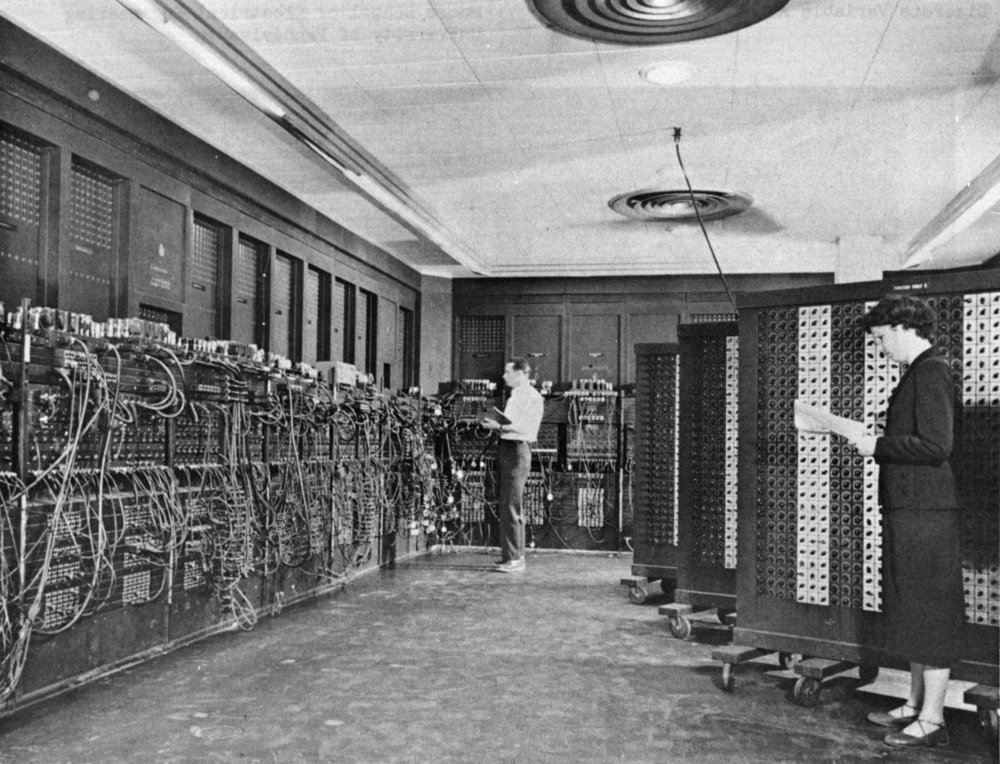
Scientist Glen Beck and Betty Snyder are programming
it
in Building 328 at United State Army's Ballistic Research Laboratory (BRL)
in Building 328 at United State Army's Ballistic Research Laboratory (BRL)
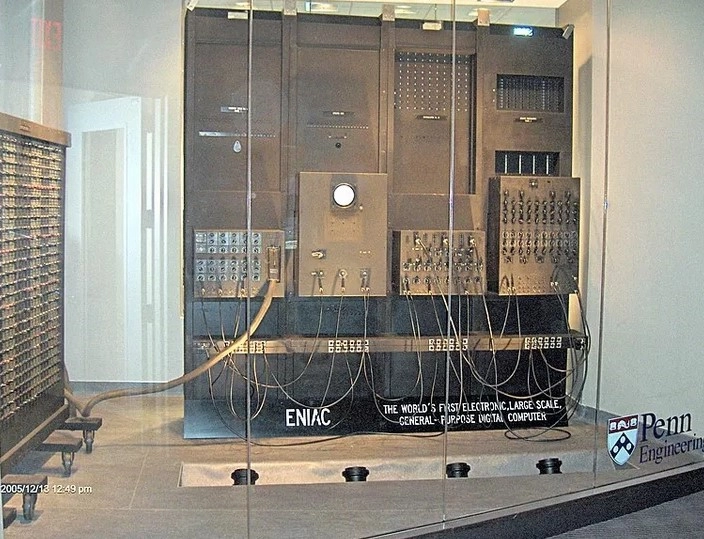
4 panels and one of 3 function tables
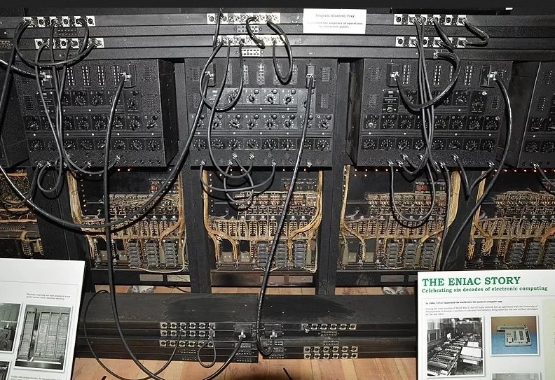
Bottom of 3 accumulators
 A section's back
A section's backwhich is containing vacuum tubes
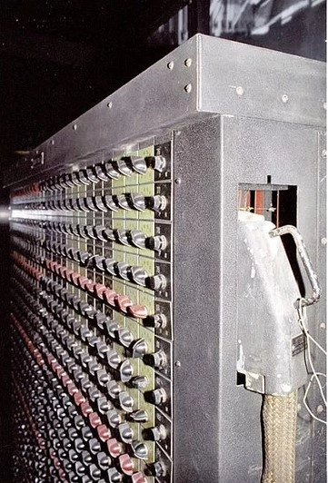
A functional table
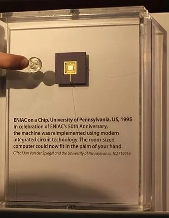
The ENIAC on a chip
using 1995's IC (Integrated Circuit) technology
using 1995's IC (Integrated Circuit) technology
Manchester Baby Computer
It is the
1st electronic digital stored-programme computer. It
is also the
1st machine which contained all essential elements of a
modern computer. It was also called Small-Scale Experiment Machine (SSEM). It
was developed by scientist Frederic Calland Williams,
Tom Kilburn and Geoff C. Tootill at
University of Manchester, Manchester, UKE. Its 1st
programme was ran on 21 June, 1948.
It weighted 1 ton and consumed 3.5 kW power. Its length and height was 5.2 m and 2.24 m repectively. It contained 300 diodes, 250 pentodes and 550 vacuum tube valves. Its RAM (Random Access Memory) was of 32 32-bit words (~ 1 kB). It used a CRT (Cathode Ray Tube) as output display.
It weighted 1 ton and consumed 3.5 kW power. Its length and height was 5.2 m and 2.24 m repectively. It contained 300 diodes, 250 pentodes and 550 vacuum tube valves. Its RAM (Random Access Memory) was of 32 32-bit words (~ 1 kB). It used a CRT (Cathode Ray Tube) as output display.
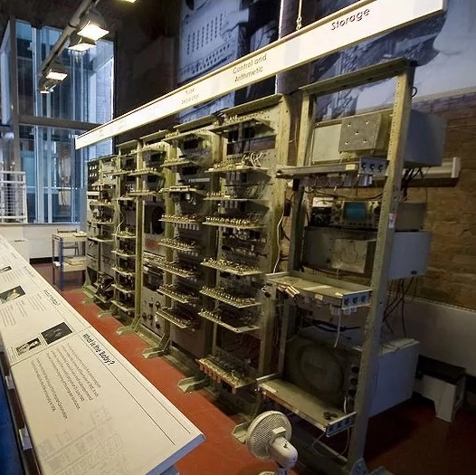
Reconstructed computer
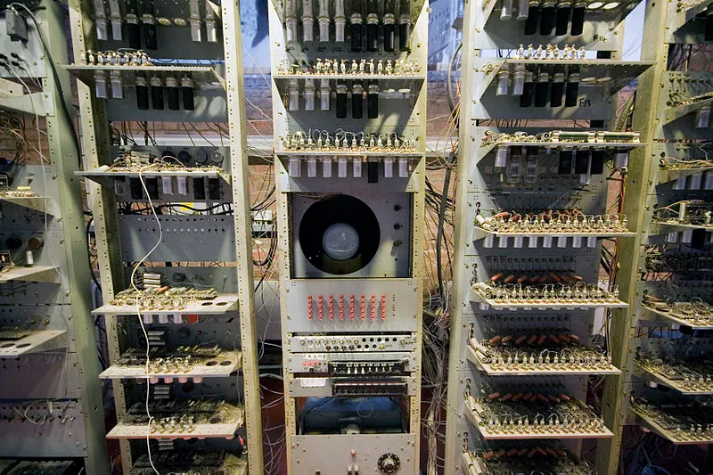
Front view of the reconstructed computer
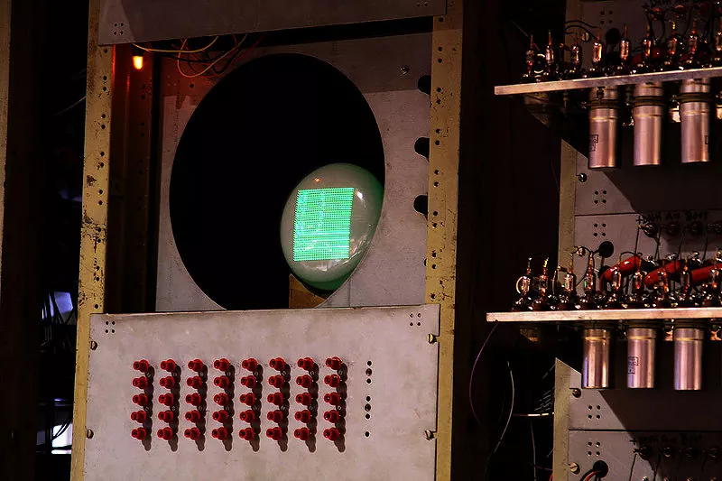
The output CRT display
Electronic Delay Storage Automatic Calculator I (EDSAC I)
It is the
2nd electronic digital stored-programme computer for
regular service. It was built by scientist Maurice Wilkes and his team at
Department of Computer Science and Technology (then Mathematical
Laboratory), University of Cambridge, UKE. It started operations on 6 May, 1949. Its 1st
programme was to calculate a table of square numbers and a list of
prime numbers.
It consumed 11 kW power. It used 5-hole punched tape as input device, derated vacuum tubes as CPU (Central Processing Unit) and teleprinter as display. Its memory was of 512 18-bit words which was made of mercury delay lines. It was finally shut down on 11 July, 1958.
It consumed 11 kW power. It used 5-hole punched tape as input device, derated vacuum tubes as CPU (Central Processing Unit) and teleprinter as display. Its memory was of 512 18-bit words which was made of mercury delay lines. It was finally shut down on 11 July, 1958.
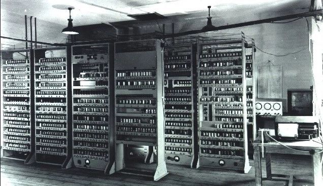
In June, 1948
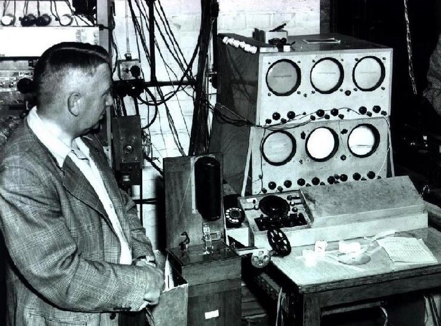
Monitoring desk
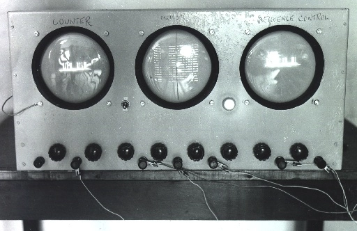
9 inch monitoring tube
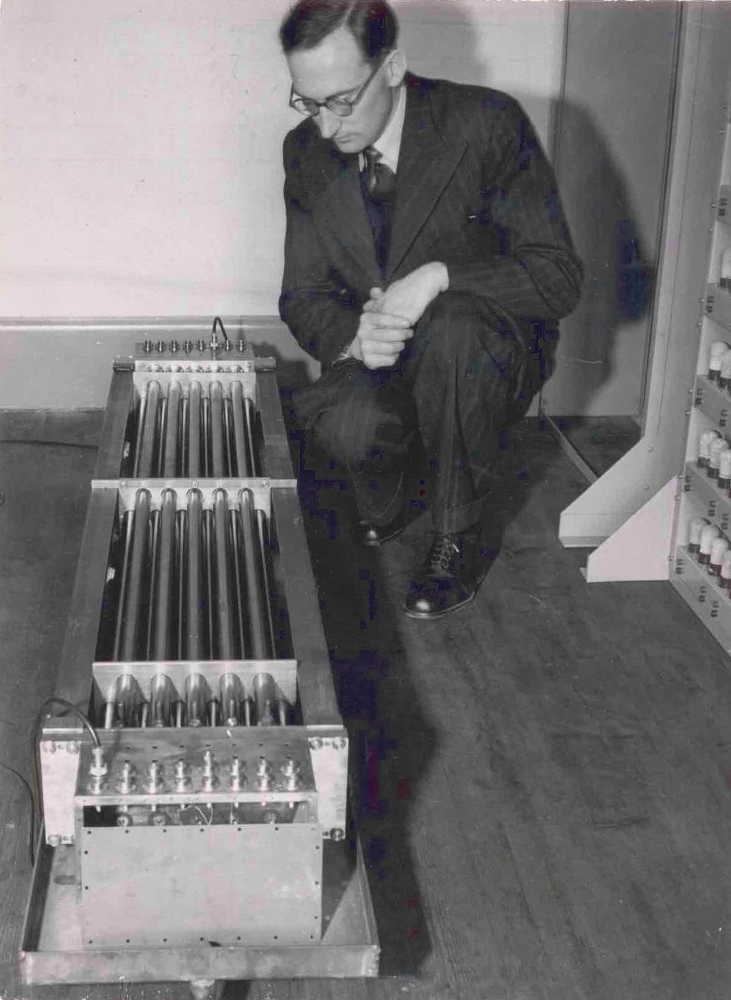
Maurice Wilkes is inspecting the mercury delay lines
which would be used as the CPU
which would be used as the CPU
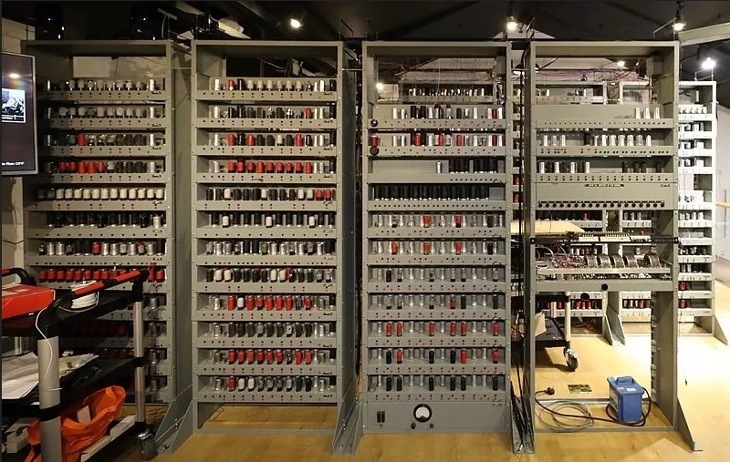
Reconstructed in October 2018
Standards Eastern/Electronic Automatic Computer (SEAC)
It is the
1st fully operational stored-programme electronic
digital computer. It was built by scientist Samuel N. Alexander and his team
at United States National Bureau of Standards (NBS), USA. It
was demonstrated in April, 1950 and was dedicated in June, 1950. This
computer was initially called NBS Interim Computer.
Its central machine weighted 3000 pounds. It contained 747 vacuum tubes (expanded to 1500), 10500 germanium diodes (expanded to 16000). Its clock rate was 1 MHz. Its memory was of 512 45-bit words which was made of 64 acoustic delay lines. It was finally shut down in 1964.
Its central machine weighted 3000 pounds. It contained 747 vacuum tubes (expanded to 1500), 10500 germanium diodes (expanded to 16000). Its clock rate was 1 MHz. Its memory was of 512 45-bit words which was made of 64 acoustic delay lines. It was finally shut down in 1964.
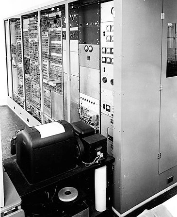
In 1950
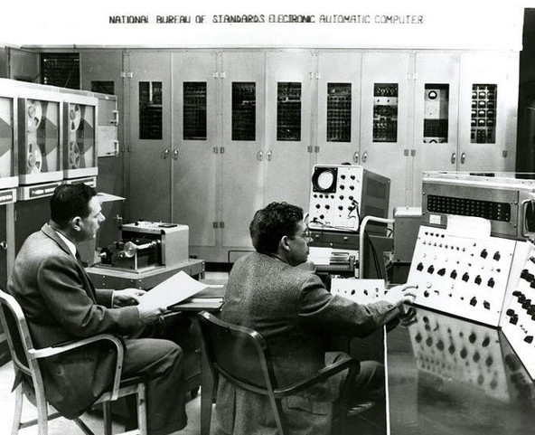
Scientist Horace Joseph and George A. Moore are using
image scanner
to analyze metallurgical photos in 1960
to analyze metallurgical photos in 1960
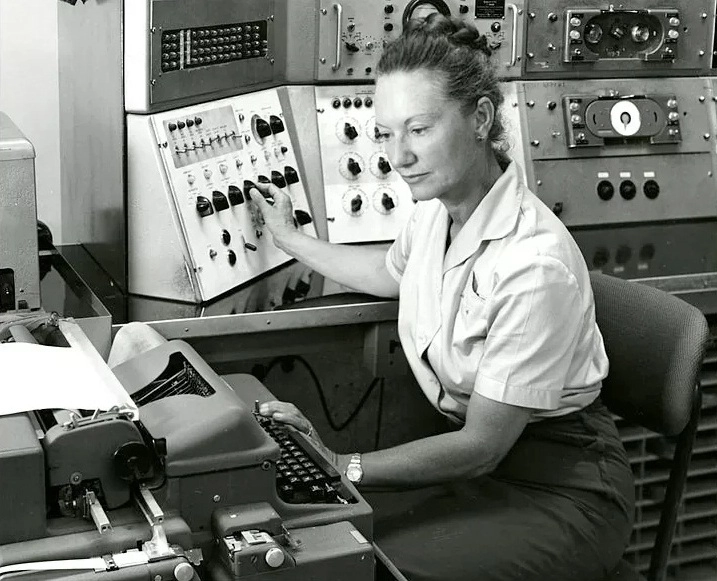
Scientist Ethel Marden is using control console
in 1959
in 1959
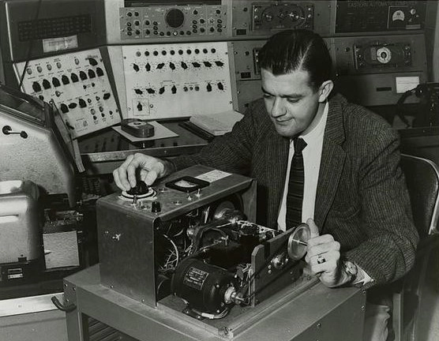
The scanner device
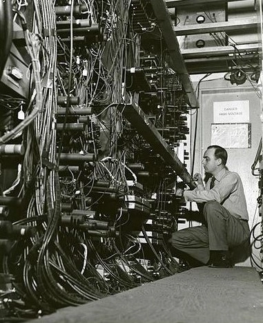
Wiring
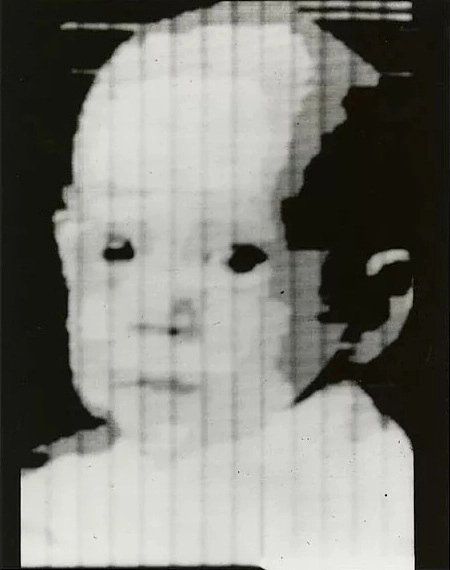
Its 1st scanned photograph.
The subject was a son of Russell A. Kisch.
The subject was a son of Russell A. Kisch.
UNIVersal Automatic Computer I (UNIVAC I)
It is the
1st business purpose American electronic digital
computer. It was principally designed by the
ENIAC
inventors. Designing was started by the inventors'
Eckert-Mauchly Computer Corporation (EMCC), USA and was
completed by Remington Rand Corporation, USA. It was released
on 31 March, 1951 as the 1st unit was accepted by
United States Census Bureau, USA. Total 46 units were sold. The
5th unit was used by
Columbia Broadcasting System (CBS), USA to predict the result
of the 1952 Presidential Election of USA.
It weighted 7.6 tons and consumed 125 kW. Its area was 35.5 m2. It contained 5000 vacuum tubes. Its clock speed was 2.25 MHz. It used Remington Standard electric typewriter as an input device and Tektronix Oscilloscope as an output device.
It weighted 7.6 tons and consumed 125 kW. Its area was 35.5 m2. It contained 5000 vacuum tubes. Its clock speed was 2.25 MHz. It used Remington Standard electric typewriter as an input device and Tektronix Oscilloscope as an output device.
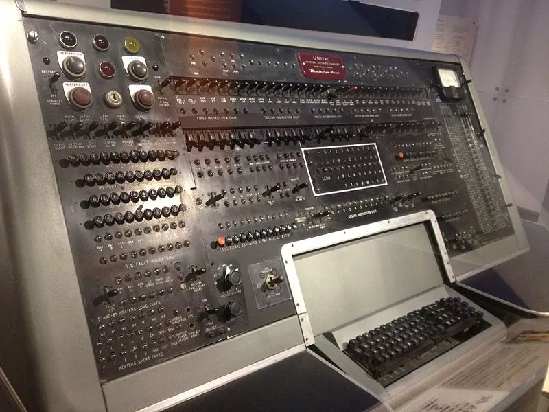
Operating console
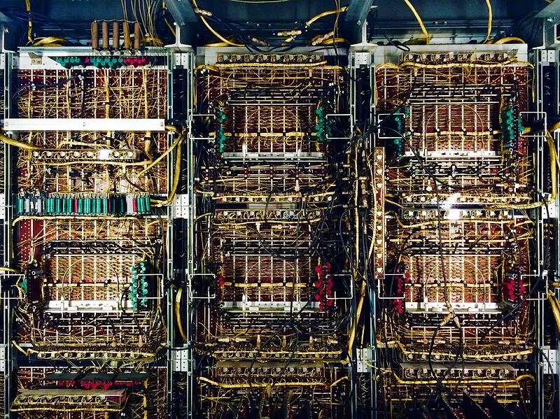
Interior view
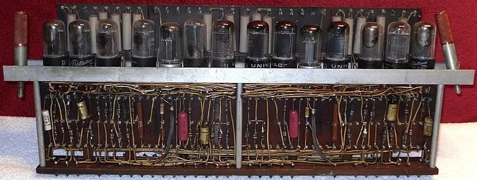
Recirculation chassis board
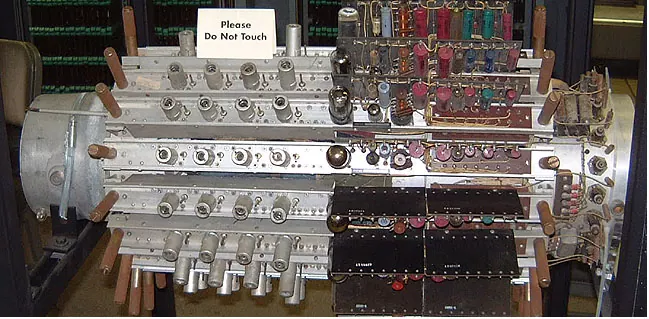
Mercury delay line
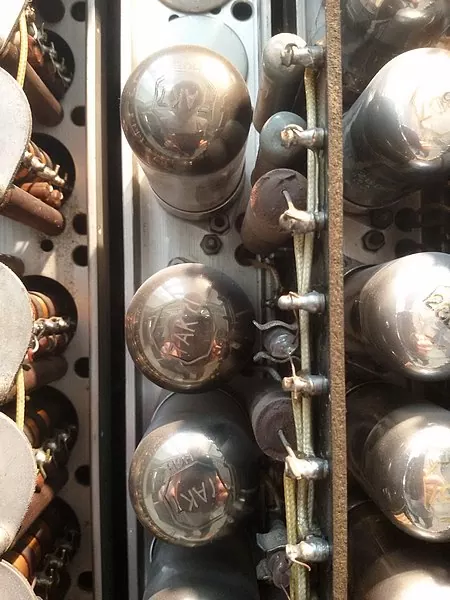
7AK7 vacuum tubes
Binary Electronic Sequence Calculator (BESK)
It is the 1st Swedish computer. It was
developed by Swedish Board for Computing Machinery, Sweden and
was completed in 1953.
It consumed 15 kVA. It contained 400 germanium diodes and 2400 vacuum tubes. Its electrostatic memory was of 512 40-bit words which was made of Williams tubes (later replaced by ferrite core memory). It was once used to create an animation of a car driving down a planned highway from the driver's perpective and that clip was one of the earlist computer animations. This computer was finally shut down in 1966.
It consumed 15 kVA. It contained 400 germanium diodes and 2400 vacuum tubes. Its electrostatic memory was of 512 40-bit words which was made of Williams tubes (later replaced by ferrite core memory). It was once used to create an animation of a car driving down a planned highway from the driver's perpective and that clip was one of the earlist computer animations. This computer was finally shut down in 1966.
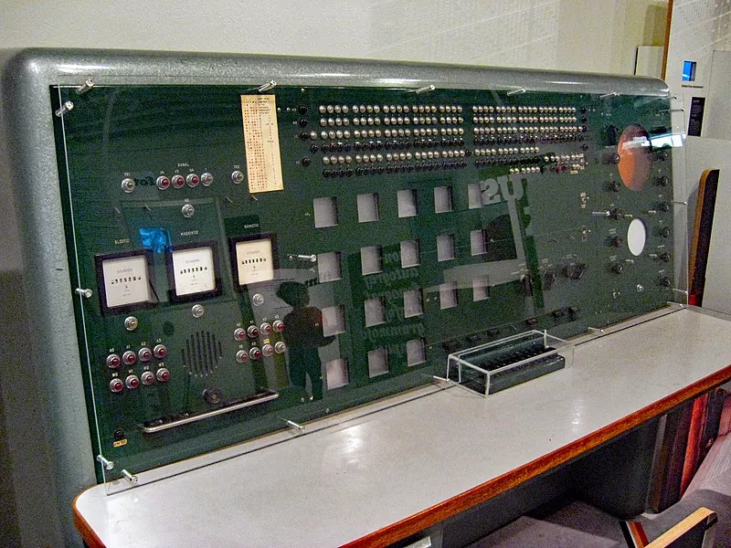
Control panel
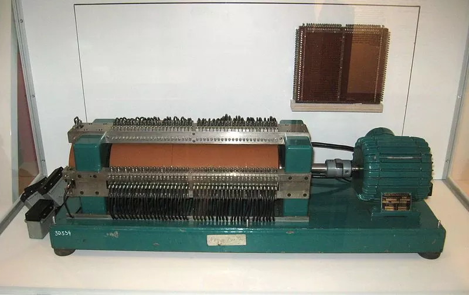
The core memory
and the drum memory
and the drum memory
Phonoghaphs / Gramophones
Scientist Thomas Alva Edison invented phonograph / gramophone
in 1877.
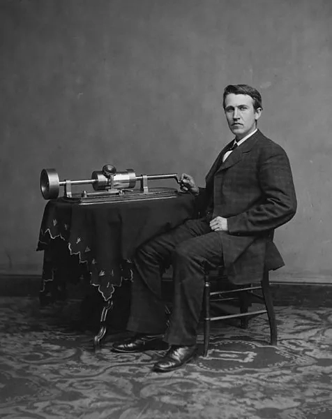
The inventor with his 2nd phonograph
in Washington, USA in April, 1878
in Washington, USA in April, 1878
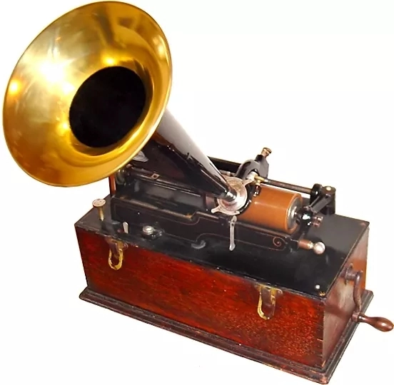
Edison Wax Cylinder Phonograph
from around 1899
from around 1899
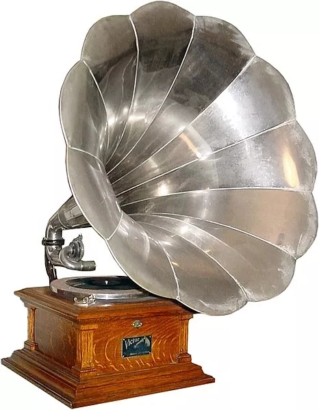
Victor V Phonograph
from around 1907
from around 1907
Light Bulbs
Scientist Thomas Alva Edison invented light bulbs. His 1st
successful test was on 22 October, 1879 and that bulb lasted
13.5 hours. His early light bulbs were made of carbon filaments and
used DC (Direct Current) electricity.
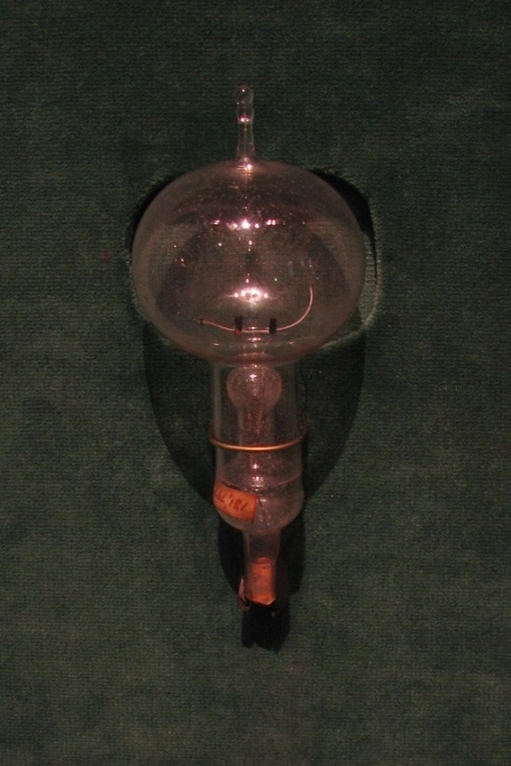
Carbon-Filament Light Bulb
from the inventor's shop
at Menlo Park
from the inventor's shop
at Menlo Park
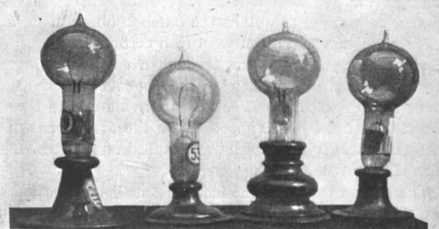
Edison Carbon-Filament Light Bulbs
from early 1880s
from early 1880s
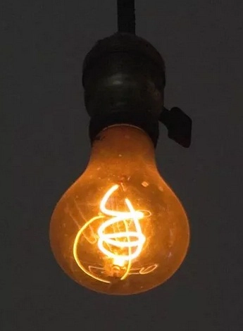
Centennial Light is the longest-lasting light bulb. This
carbon-filament bulb is
burning since 1901. It is at
4550 East Avenue, Livermore, California, USA and is cared for
by
Centennial Light Bulb Committee, Livermore-Pleasanton Fire
Department. This model was invented by Adolphe Chaillet and was made by
Shelby Electric Company, Ohio, USA.
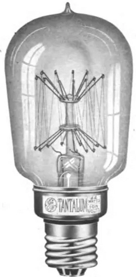
1902 Tantalum Filament Light Bulb is the
1st light bulb having a metal filament.
This one is from 1908.
This one is from 1908.
Telephones
Scientist Alexander Graham Bell invented telephone.
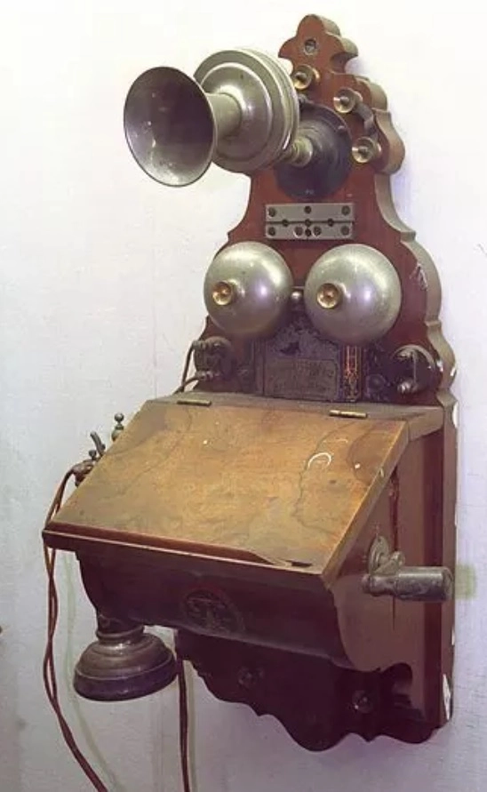
Wooden Wall Telephone
with a Hand-Cranked Magneto Generator
with a Hand-Cranked Magneto Generator
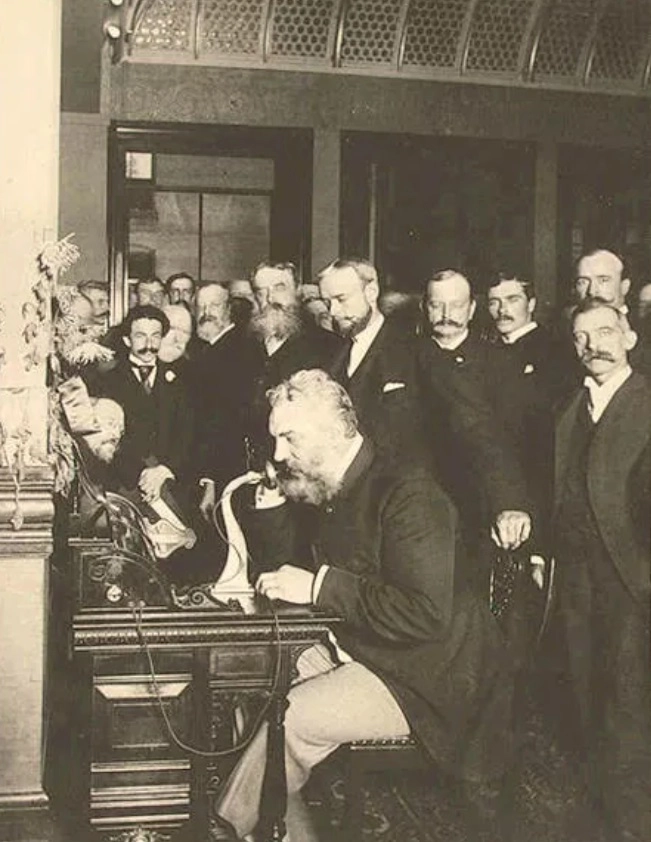
The inventor is placing the
1st New York to Chicago telephone call
in 1892
in 1892
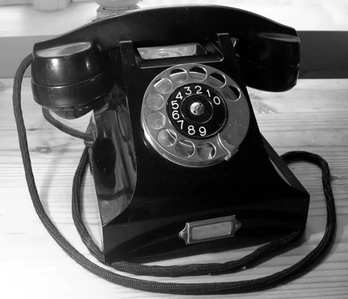
Ericsson DBH 1001 is the
1stcombined telephone.
It was from around 1931.
It was from around 1931.
 Telephone which was used by American soldiers
Telephone which was used by American soldiersduring the World War II
at Minalin, Pampanga, Philippines
Radio Receivers
Bangladeshi (then British-Indian) scientist
Jagadish Chandra Bose invented radio system. He is called
Father Of The Radio worldwide.
The radio receiver which works on the power of received signal only and does not need other power source is called Crystal Radio. As it uses crystal detector to receive signal, it is called so. It is also called Batteryless Radio.
The radio receiver which uses transistor-based circuitry is called Transistor-Radio.
The radio receiver which works on the power of received signal only and does not need other power source is called Crystal Radio. As it uses crystal detector to receive signal, it is called so. It is also called Batteryless Radio.
The radio receiver which uses transistor-based circuitry is called Transistor-Radio.
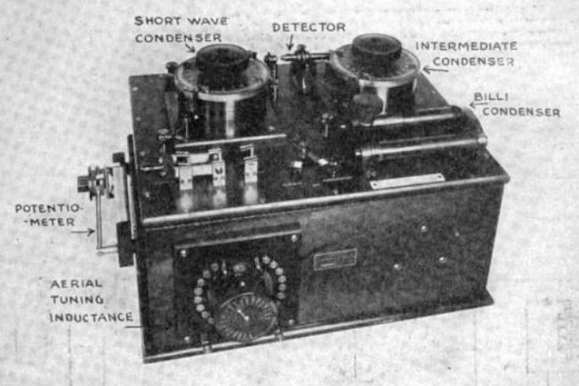
Marconi Type 103 Crystal Radio
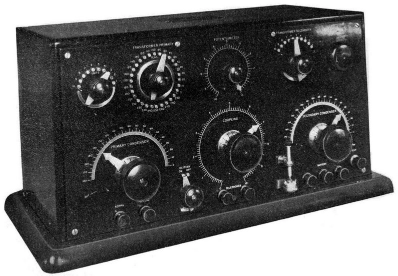
Marconi Type 106 Crystal Radio
which was used for transatlantic communication
in around 1917
which was used for transatlantic communication
in around 1917
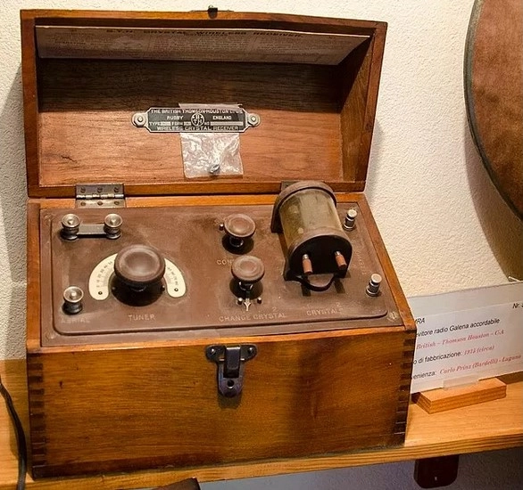
English Crystal Radio
from 1915
from 1915
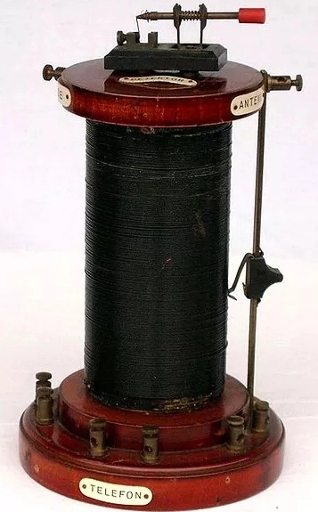
German Crystal Radio
from around 1924
from around 1924
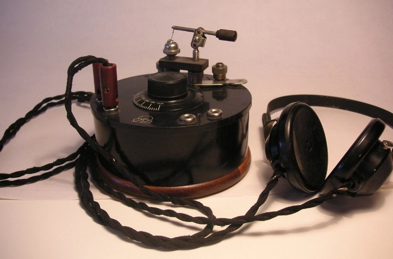
Swedish Crystal Radio, from 1922,
which was manufactured by Radiola, France.
It used Cat's Whisker Detector.
which was manufactured by Radiola, France.
It used Cat's Whisker Detector.
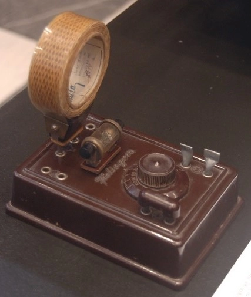
Heliogen, a German Crystal Radio
from around 1935,
which used Basket Weave type coil
from around 1935,
which used Basket Weave type coil
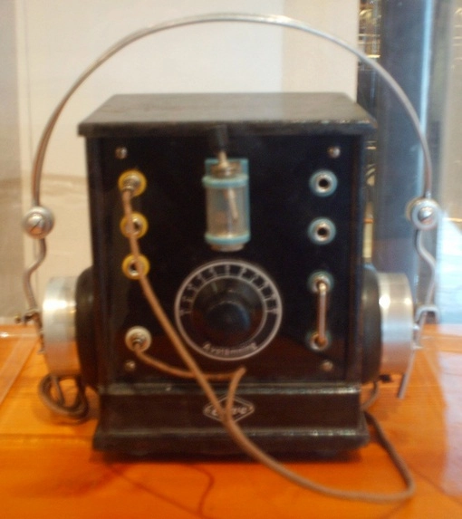
Box, a Swedish Crystal Radio
from around 1925
from around 1925
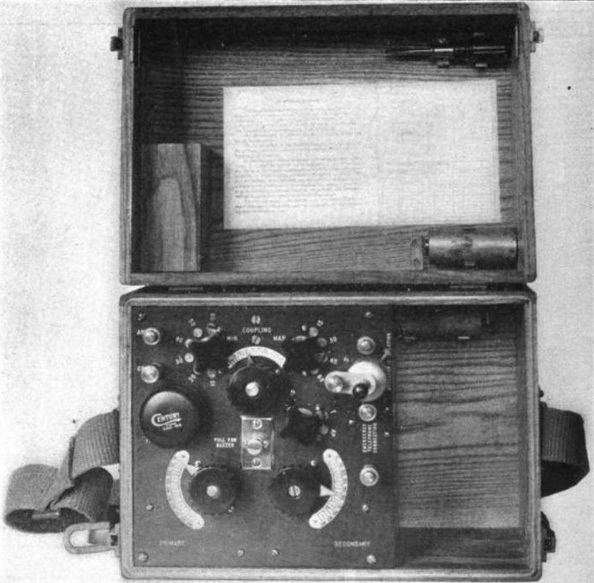
SCR-54, a Crystal Radio
which was used by United States Signal Corps, United States Army, USA
in the World War I
for fire control in conjunction with airplanes
which was used by United States Signal Corps, United States Army, USA
in the World War I
for fire control in conjunction with airplanes
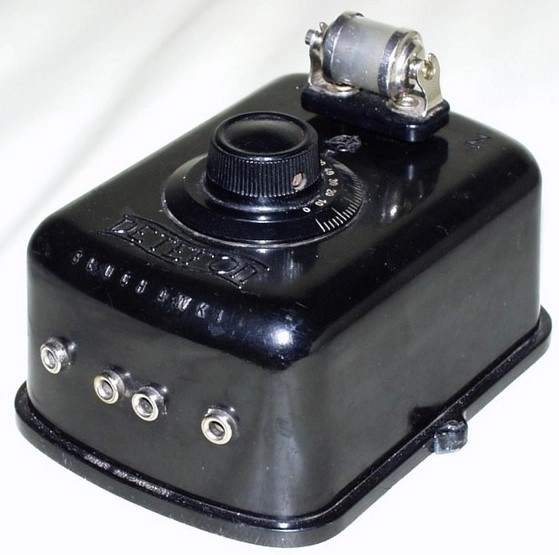
Polish Detefon, a Crystal Radio
from around 1930-1939,
which used Cartridge type crystal detector
from around 1930-1939,
which used Cartridge type crystal detector
Foxhole Radio, a Crystal Radio
which was used by Italian Front
in the World War II.
It used a pencil lead attached to a safety pin pressing a razor blade as detector.
which was used by Italian Front
in the World War II.
It used a pencil lead attached to a safety pin pressing a razor blade as detector.
Crystal Radio which was used as backup receiver
on a Liberty Ship in the World War II
on a Liberty Ship in the World War II
Crystal Radio which was marketed to children
by Arrow Electronics, USA in 1970s-era
by Arrow Electronics, USA in 1970s-era
Regency TR-1 is the
1st commercially produced Transistor-Radio.
It was manufactured by Texas Instruments, Dallas, Texas, USA
and Industrial Development Engineering Associations (IDEA)
in 25 October, 1954.
It used a 22.5 volt battery, a germanium diode and 4 NPN transistors.
It was manufactured by Texas Instruments, Dallas, Texas, USA
and Industrial Development Engineering Associations (IDEA)
in 25 October, 1954.
It used a 22.5 volt battery, a germanium diode and 4 NPN transistors.
Transistor-Radio, from around 1958,
which was manufactured by Emerson Radio Corporation, Hackensack, New Jersey, USA
which was manufactured by Emerson Radio Corporation, Hackensack, New Jersey, USA
Televisions (TVs)
Scientist John Logie Baird invented both television camera and
television set. Those early inventions were electro-mechanical.
The inventor with his televisor transmitter equipment
and dummies James and Stooky Bill
in 1925
and dummies James and Stooky Bill
in 1925
The inventor with his television apparatus
in around 1925
in around 1925
1st known television picture.
It was on 26 January, 1926.
The subject is inventor's business partner Oliver Hutchinson.
It was on 26 January, 1926.
The subject is inventor's business partner Oliver Hutchinson.
An early experimental television broadcast
1st known colour-television picture.
The subject is airwoman Miss Paddy Naismith.
This 2-colour picture was produced by the inventor's all-electronic television system
which used 2 projection Cathode Ray Tubes (CRTs).
The subject is airwoman Miss Paddy Naismith.
This 2-colour picture was produced by the inventor's all-electronic television system
which used 2 projection Cathode Ray Tubes (CRTs).
RCA 630-TS is the
1st mass-produced television set.
It was sold in 1946-1947.
It was sold in 1946-1947.
Fernseher Tesla 4001A is the
1st mass-produced Czechoslovak television set.
It was from around 1953-1957.
It was from around 1953-1957.
Mobile Phones
Prior to 1973, mobile telephony was limited to phones installed in
vehicles. Scientist Martin Cooper invented
handheld cellular mobile phone at
Motorola Incorporate, USA in 1973. It was marketed in 1983 as
Motorola DynaTAC (Dynamic Adaptive Total Area Coverage) 8000X.
Mobile Radio Telephone
The Motorola DynaTAC 8000X mobile phone.
It tooked 10 hours to be charged
and served 30 minutes of talk time.
It used a LED (Light Emitting Diode) monitor
to display phone numbers.
It tooked 10 hours to be charged
and served 30 minutes of talk time.
It used a LED (Light Emitting Diode) monitor
to display phone numbers.
Martin Cooper with his Motorola DynaTAC 8000X prototype.
(Photographed in 2007)
(Photographed in 2007)
Transformers
It is a passive electromagnetic device that transforms AC (Alternating
Current) electricity.
1889 Spark-Excited Resonant Transformer,
a predecessor to Tesla Coil,
was invented by scientist Henry Rowland
a predecessor to Tesla Coil,
was invented by scientist Henry Rowland
Earliest
Core Form and Shell Form ZBD-designed transformers
which were manufactured at Ganz Factory in 1885.
The ZBD team consisted of scientist Karoly Zipernowsky, Otto Blathy and Miksa Deri.
which were manufactured at Ganz Factory in 1885.
The ZBD team consisted of scientist Karoly Zipernowsky, Otto Blathy and Miksa Deri.
Telegraphs
It is a long-distance texual messenging system using symbolic codes.
Five-Needle, Six-Wire Telegraph is the
1st telegraph system used in commercial service.
It was invented by scientist William Fothergill Cooke and Charles Wheatstone.
It was from around 1837.
It was invented by scientist William Fothergill Cooke and Charles Wheatstone.
It was from around 1837.
Morse Key, a type of Telegraph Key
from around 1900,
was invented by scientist Gustav Hasler
from around 1900,
was invented by scientist Gustav Hasler
J-38, a Straight Key, a type of Telegraph Key,
was used by United States Military during the World War II
was used by United States Military during the World War II
Galvanometers
Galvanometer is an electromagnetic measurement device used to measure
electricity.
Early D'Arsonval Galvanometer
Astatic Galvanometer
which was developed by scientist Leopoldo Nobili
in 1825
which was developed by scientist Leopoldo Nobili
in 1825
1850 Pouillet Tangent Galvanometer
which was invented by scientist Claude Servais Mathias Pouillet
which was invented by scientist Claude Servais Mathias Pouillet
A Tangent Galvanometer
from Birmingham, UKE,
was made in around 1950
from Birmingham, UKE,
was made in around 1950
Thomson Mirror Galvanometer
which was invented by scientist William Thomson
in 1858
which was invented by scientist William Thomson
in 1858
Mirror Galvanometer
which was invented by scientist H.W. Sullivan.
It was used at Transatlantic Cable Station, Halifax, NS, Canada
in late 19th or early 20th century.
which was invented by scientist H.W. Sullivan.
It was used at Transatlantic Cable Station, Halifax, NS, Canada
in late 19th or early 20th century.
Weston Galvanometer (in portable case)
which was invented by scientist Edward Weston
which was invented by scientist Edward Weston
Microwave (M/W) Communications
Bangladeshi (then British-Indian) scientist
Jagadish Chandra Bose, the
Father Of The Radio, invented
the system of telecommunication which uses millimeter
wavelengths. It is called Microwave (M/W). He also invented
Crystal Radio Detector, Horn Antenna, Waveguide and other
appartus
which were used at microwave frequencies. He used a Galena Crystal
Detector and
Galvanometer to
detect micrtowaves.
The Father Of The Radio
at Royal Institution, London, UKE
in 1887
at Royal Institution, London, UKE
in 1887
Diagram of Microwave Receiver and Transmitter
from the inventor's 1897 paper
from the inventor's 1897 paper
Inventor's 60 Hz Microwave Appartus
at Bose Institute, Kolkata, India.
The receiver is on the left.
at Bose Institute, Kolkata, India.
The receiver is on the left.
Transistors
It is a semiconductor electronic device used to amplify or to switch
electronic signals / electrical power.
Scientist Julius Edgar Lilienfeld proposed the concept of Field Effect Transistor (FET) in 1925. Scientist John Bardeen, William Shockley and Walter Brattain invented Point-Contact Transistor at Bell Labs in 23 December, 1947. They also Bipolar Junction Transistor (BJT) in 1948.
Scientist Julius Edgar Lilienfeld proposed the concept of Field Effect Transistor (FET) in 1925. Scientist John Bardeen, William Shockley and Walter Brattain invented Point-Contact Transistor at Bell Labs in 23 December, 1947. They also Bipolar Junction Transistor (BJT) in 1948.
The 1st transistor,
a Point-Contact Transistor
a Point-Contact Transistor
Replica of the 1st transistor
The inventors at the Bell Labs
in 1948
in 1948
Long Range Navigation (LORAN)
It is a hyperbolic radio navigation system which was developed
in USA. It was used on ships and aircrafts operating in the
Pacific Theater during the World War II.
It used Cathode Ray Tube (CRT) as display.
It used Cathode Ray Tube (CRT) as display.
AN/APN-4,
an airborne LORAN receiver
from around 1960s
an airborne LORAN receiver
from around 1960s
AN/APN-4 LORAN receiver on
Royal Canadian Air Force Canso (PBY) aircraft
Royal Canadian Air Force Canso (PBY) aircraft
Curta Calculator
It was a mechanical calculator which was developed by scientist
Curt Herzstark. It was also known as Pepper Mill,
Pepper Grinder and
Math Granade due to its shape,
operation and resemblance. It fitted in the palm of a hand. It was
last produced in 1972.
It had a crank which was used to drive it. Numbers were entered using slides. A single turn of the crank performs addition. Pulling the crank upwards slightly before turning performs subtraction. Multiplication, division and other functions require a series of crank and carriage-shifting operations.
It had a crank which was used to drive it. Numbers were entered using slides. A single turn of the crank performs addition. Pulling the crank upwards slightly before turning performs subtraction. Multiplication, division and other functions require a series of crank and carriage-shifting operations.
Curta Type I
It had 8 digits for data entry,
a 6-digit revolution counter
and an 11-digit result counter.
It weighted 230 g.
Total 80000 units were sold.
It had 8 digits for data entry,
a 6-digit revolution counter
and an 11-digit result counter.
It weighted 230 g.
Total 80000 units were sold.
Curta Type II
It was released in 1954.
It had 11 digits for data entry,
a 8-digit revolution counter
and a 15-digit result counter.
It weighted 373 g.
Total 60000 units were sold.
It was released in 1954.
It had 11 digits for data entry,
a 8-digit revolution counter
and a 15-digit result counter.
It weighted 373 g.
Total 60000 units were sold.
Colossus Computers
It was a set of British electronic digital programmable
computers which were developed by scientist
Tommy Harold Flowers, Sidney Broadhurst,
William Chandler and Allen William Mark (Doc) Coombs and
was manufactured by Post Office Research Station, UKE in around
1943-1945 to help in the cryptanalysis of the Lorenz cipher. It
was neither stored-programmed,
nor had any memory or RAM. It was
programmed by plugs and switches.
It consumed 8.5 kW power. It used thermionic vacuum tube valves, thyratrons, relays and stepping switches as CPU (Central Processing Unit). It used paper tape as input device. It used indicator lamp panel display and electric typewriter as output device. It was discontinued in 1960. Total 12 units were used.
It consumed 8.5 kW power. It used thermionic vacuum tube valves, thyratrons, relays and stepping switches as CPU (Central Processing Unit). It used paper tape as input device. It used indicator lamp panel display and electric typewriter as output device. It was discontinued in 1960. Total 12 units were used.
Colossus Mark II Computer is being operated
by Women's Royal Naval Service (WREN), USA
by Women's Royal Naval Service (WREN), USA
Colossus Computer No. 10
Selection panel
K2 switch panel containing switches
for specifying the algorithm (left)
and counters to be selected (right)
for specifying the algorithm (left)
and counters to be selected (right)
Set Total switch panel
 A stepping switch
A stepping switchfrom a Colossus Computer
Reconstructed Colossus Mark II Computer
by scientist Tony Sale (right)
by scientist Tony Sale (right)
Front view of a reconstructed Colossus computer
Bendix G-15 Computer
It was an early vacuum-tube computer which was developed by
scientist Harry Douglas Huskey and was manufactured by
Computer Division, Bendix Corporation, Los Angeles, California,
USA
in 1956. It was a serial-architecture machine and also had
Intercom Interpretive System.
It weighted 438 kG. Its dimension was 1.5 m X 1 m X 1 m. Its drum memory was of 2160 29-bit words. It contained 300 germanium diodes and 450 vacuum tubes. Its average memory access time was 14.5 ms. It used photo-electric paper tape reader as input device and typewriter as primary output device. Its marketing was discontinued in 1963. Total 400 units were sold.
It weighted 438 kG. Its dimension was 1.5 m X 1 m X 1 m. Its drum memory was of 2160 29-bit words. It contained 300 germanium diodes and 450 vacuum tubes. Its average memory access time was 14.5 ms. It used photo-electric paper tape reader as input device and typewriter as primary output device. Its marketing was discontinued in 1963. Total 400 units were sold.
In 1956
Reconstructed in 2015
More Calculators and Computers
Calculator
Analytical Engine
Difference Engine
Manchester Mark I Computer
Its most significant innovation was its incorporation of Index Registers. It consumed 25 kW power and contained 4050 vacuum tubes.
Commonwealth Scientific and Industrial Research Automatic Computer (CSIRAC)
Its memory was 768 20-bit words which was made of acoustic mercury delay lines. Its clock speed was 1000 Hz. It was finally shut down in 1964.
Standards Western Automatic Computer (SWAC)
It contained 2,300 vacuum tubes. Its memory was of 256 37-bit words which was made of William tubes.
MAgnetic Drum Digital Differential Analyzer (MADDIDA)
It was a guidance system for Snak Missile. It contained 44 integrators which was made of a magnetic drum with 6 storage tracks.
Electronic Discrete Variable Automatic Computer (EDVAC)
Its area was 45.5 m2. It weighted 17300 pounds and consumed 56 kW power. It contained 12000 diodes, 6000 vacuum tubes. Its ultrasonic serial memory was of 1,000 34-bit words which was made of 64 acoustic delay lines.
Harwell Dekatron Computer
It weighted 2.8 short tons. It used relays and vacuum tubes as CPU (Central Processing Unit). It used paper tape as storage and Dekatron registers as memory. It was finally shut down in 1973.
UNIVersal Automatic Computer (UNIVAC) 1101
It weighted 7.6 tons. Its length and height was 12 m and 6.1 m respectively. It contained 2700 vacuum tubes. Its drum memory was of 16384 24-bit words (~ 48 kB) and that had 200 read-write Heads. Its drum memory's diameter was 22 cm.
Binary Arithmatic/Automatic Relay Calculator (BARK)
It contained 8000 telephone keys, 175000 soldered points and 80 km of wire. Its programming was done by plugboard. It was finally shut down on 22 September, 1954.
Ferranti Mark I Computer
It weighted 4.5 tons and contained 4500 vacuum tubes.
Hollerith Electronic Computer I (HEC I)
Its dimensions was 1.5 m high by 3 m wide by 5.5 m deep. It contained approximately 1000 vacuum tubes. Its memory was of 2 kilobytes.
IAS Machine
It weighted 450 kg. It used 1700 vacuum tubes as CPU (Central Processing Unit). Its memory was of 1024 words (~ 5.1 kilobytes) which was made of Williams tubes. It was finally shut down in 15 June, 1958.
Ordnance Discrete Variable Automatic Computer (ORDVAC)
It weighted 3000 pounds. Its memory was of 1024 40-bit words which was made of 40 CRTs (Cathode Ray Tubes) and 800 vacuum tubes. Its arithmatic unit used 1100 vacuum tubes and control unit used 500 vacuum tubes.
Argonne Version of the Institute's Digital Automatic Computer (AVIDAC)
It could not exchange programmes with other computers.
IBM 702
It weighted 24645 pounds. It contained 10 magnetic drives. It used punch cards as input devices and printer as output device.
UNIVersal Automatic Computer (UNIVAC) 1103
It weighted 17.5 tons. Its RAM (Random Access Memory) was of 1024 36-bit words which was made of 36 Williams tubes. Each Williams tube was 5 inch in diameter.
Datatron 205 Computer
Here, it is at United States Geological Survey, USA.
IBM Naval Ordance Research Computer (NORC)
Its memory was of 2000 words (expanded to 20000) which was made of 4 sets of 66 electrostatic Williams tubes (later replaced by magnetic core memory). It contained 9800 vacuum tubes and 10000 crystal diodes. Its display was made of a CRT (Cathode Ray Tube) and a 35 mm film camera. It was finally shut down in 1968.
UNIVersal Automatic Computer (UNIVAC) 1102
It used 5 typewriters for printed output, 5 paper tape punches and 4 pen plotters to produce graphs.
Wisconsin Integrally Synchronized Computer (WISC)
It weighted 910 kg. Its memory was of 1024 50-bit words ( ~ 6 kB) which was made of drum memory.
IBM 305 RAMAC (Random Access Method of Accounting and Control) Computer
It weighted over 1 ton. Its marketing was discontinued in 1961. More than 1000 units were sold.
Here, it is at United States Army Red River Arsenal, USA.
2 disk drives, the console and the processing unit are seen.
FUJIC
It contained approximately 1700 vacuum tubes. Its memory was of 255 33-bit words which was made of an ultrasonic mercury delay line.
Atlas Computer
It used discrete germanium transistors instead of vacuum tubes.
Here, it is at the University of Manchester, Manchester, UKE in January, 1963.
Titan Computer (1963)
Its main memory had 128 kB of 48-bit words. It had 2 HDDs (Hard Disk Drives) and several magnetic tape drives. It used discrete germanium transistors. It was finally shut down in October 1973.
Ballistic Research Laboratories Electronic Scientific Computer I (BRLESC I)
It contained 853 transistors and 1727 vacuum tubes. Its memory was of 4096 72-bit words. It used punched cards, magnetic tape and a magnetic drum as input-output devices.
BESM-6
Its area was 150-200 m2 and consumed 30 kW power. Its CPU (Central Processing Unit) was of 48-bit @ 9MHz and memory was of 192 kB. D-68 was its OS (Operating System).
Laptop Computers
R2E CCMC Portal laptop computer
which was developed by scientist Francois Gernelle
and was manufactured by R2E
in September 1980.
It weighted 12 kG.
Its CPU (Central Processing Unit) was Intel 8085.
Its RAM (Random Access Memory) was of 64 kB.
Its OS (Operating System) was Prologue.
which was developed by scientist Francois Gernelle
and was manufactured by R2E
in September 1980.
It weighted 12 kG.
Its CPU (Central Processing Unit) was Intel 8085.
Its RAM (Random Access Memory) was of 64 kB.
Its OS (Operating System) was Prologue.
Osborne 1 laptop computer
Dulmont Magnum Kookaburra laptop computer
Epson HX-20 laptop computer
which was released in 1981
which was released in 1981
Epson L3S laptop computer
which used MS-DOS (Microsoft - Disk Operating System)
which used MS-DOS (Microsoft - Disk Operating System)
Others
Voltaic Pile, also Pila di Volta, is the
1st electrical battery.
It was invented by Italian scientist Alessandro Giuseppe Antonio Anastasio Volta
in 1799.
It was invented by Italian scientist Alessandro Giuseppe Antonio Anastasio Volta
in 1799.
Induction Coil which was used in schools
at Bremerhaven, Germany
in around 1900
at Bremerhaven, Germany
in around 1900
×
×